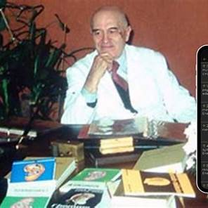
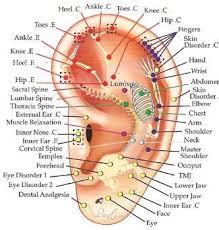
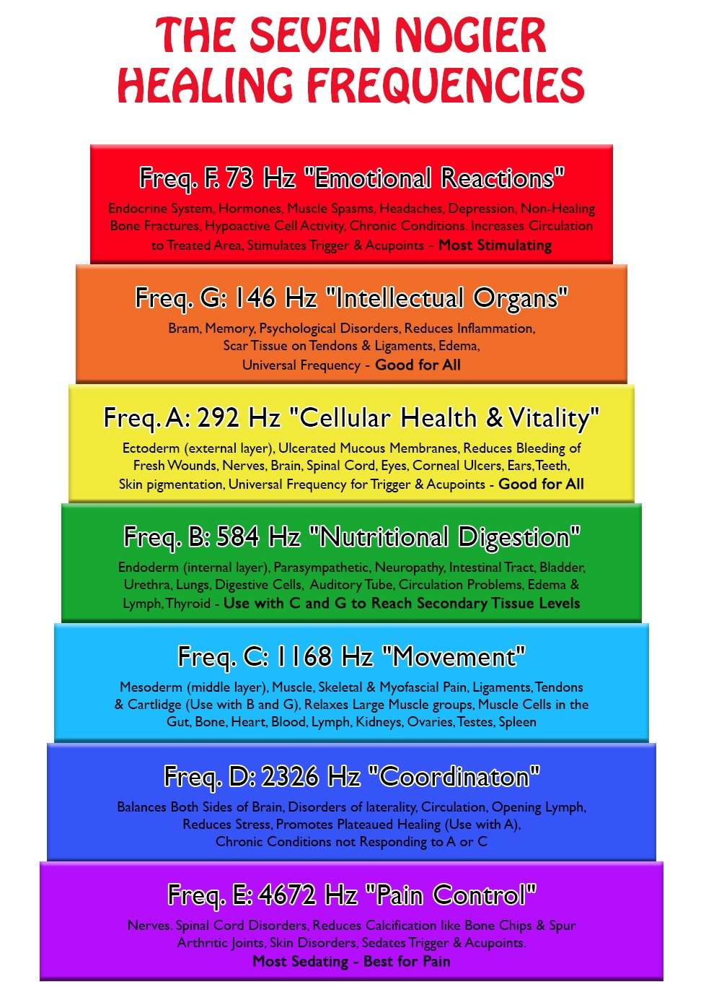
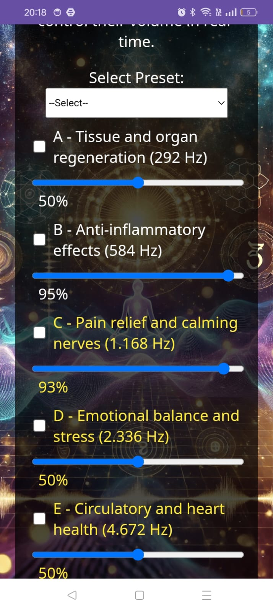

About Paul Nogier
Paul Nogier was a French physician whose research into the use of specific vibrational frequencies led to groundbreaking discoveries in the field of sound therapy. His work introduced the concept of using precise frequencies to interact with the body’s energy systems, promoting healing, balance, and overall wellness.
Nogier's most notable discovery, the Nogier Frequencies, forms the foundation of sound therapy as it is practiced today. These frequencies are thought to influence various physiological and psychological processes, helping restore harmony to the body and mind.
Paul Nogier's Work
Paul Nogier’s work was focused on identifying specific vibrational frequencies that could interact with the body’s energy field to stimulate healing. Through rigorous research, Nogier demonstrated that certain frequencies could be used to support various therapeutic effects, without the need for invasive procedures or drugs.
His contributions form the core of modern sound therapy, which uses these frequencies to help alleviate stress, enhance mental clarity, and support physical well-being. The Resonance app brings these frequencies to life, allowing users to experience the healing power of sound therapy wherever they are.
The Nogier Frequencies
The Nogier Frequencies are a collection of specific sound waves identified by Paul Nogier as having therapeutic properties. These frequencies can affect the body on both a cellular and energetic level, promoting healing and restoring balance to various systems within the body.
Some of the key frequencies that are utilized in sound therapy include:
- 73 Hz - Supports cellular vitality and energy flow.
- 146 Hz - Balances emotional states and promotes relaxation.
- 292 Hz - Helps with muscle recovery and tissue regeneration.
- 584 Hz - Encourages deep mental clarity and focus.
- 1,168 Hz - Enhances spiritual awareness and energetic alignment.
- 2,336 Hz - Supports deep cellular detoxification.
- 4,672 Hz - Stimulates the nervous system and promotes overall vitality.
These frequencies can be experienced through sound therapy, either through specialized audio tracks or devices designed to emit the appropriate vibrations.
Download the Resonance APK
Ready to experience the healing power of Nogier Frequencies? Download the Resonance app and start your sound therapy journey today. The app provides access to a range of frequencies that can help restore balance, promote relaxation, and improve your well-being.
Just Download or ->> Donate via PayPal and downloadResonance
Enjoy
His contributions form the core of modern sound therapy, which uses these frequencies to help alleviate stress, enhance mental clarity, and support physical well-being. The Resonance app brings these frequencies to life, allowing users to experience the healing power of sound therapy wherever they are.
Contact
For more information about the work of Paul Nogier and the use of frequencies for sound therapy, or if you have any inquiries regarding our app, feel free to get in touch with us.
Email: dragoimihai541@gmail.com
Phone: +123 456 7890